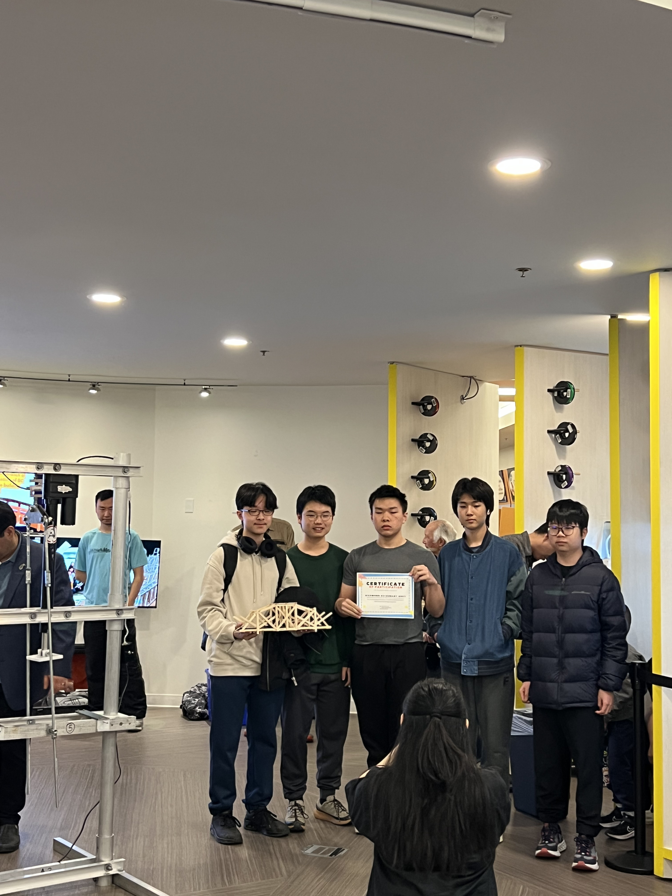
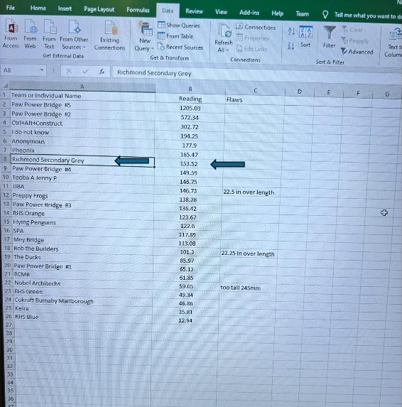
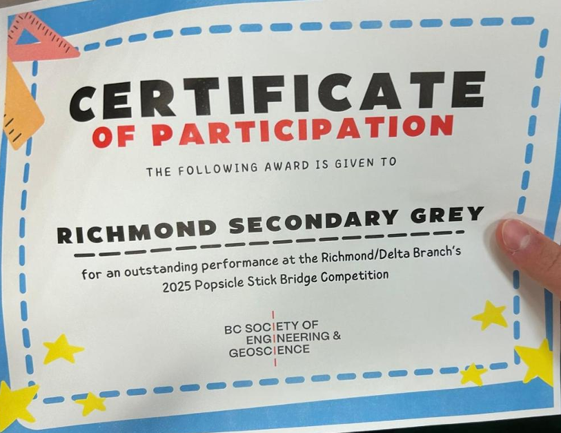

I competed for Richmond Secondary's Grey for the Richmond/Delta Branch Popsicle Stick Bridge Building Contest
Design rules:
1. The bridge must be built with a maximum of 100 Popsicle sticks and Aleene's Tacky Glue or Titan School Glue or Elmer's School Glue. No other glues are acceptable. Popsicle sticks with non- standard dimensions are not allowed. Popsicle sticks must be used whole and without alteration. No cutting, grinding or sanding is permitted.
2. A deck made from construction paper must be included wide enough to permit a matchbox car, 35 mm wide by 15 mm high to roll across the bridge.
3. It is critical that the bridge must span a minimum 400 mm gap. It is recommended that the bridge to be at least 450 mm long (25mm excess on each end) to ensure that bridge does not fall through the 400mm opening when the load is applied (please see the diagram below). The bridge must not exceed 125 mm in width. Note that the bridge may not load the sides of the 400 mm gap at any time during the testing. If it does, the test will be terminated.
4. The test machine will apply a load to the center of the top side of the bridge as shown. The highest center portion of the bridge should be designed to support a flat loading plate. The dimension of the loading plate is 100 mm by 120 mm. The bridge must not exceed 200 mm in height and 550 mm in length.


